Resolucion de ecuaciones lineales
también conocido como sistema lineal de ecuaciones o simplemente sistema lineal, es un conjunto de ecuaciones lineales (es decir, un sistema de ecuaciones en donde cada ecuación es de primer grado), definidas sobre un cuerpo o un anillo conmutativo. Un ejemplo de sistema lineal de ecuaciones sería el siguiente:
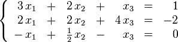
El problema consiste en encontrar los valores desconocidos de las variables x1, x2 y x3 que satisfacen las tres ecuaciones.
El problema de los sistemas lineales de ecuaciones es uno de los más antiguos de la matemática y tiene una infinidad de aplicaciones, como en procesamiento digital de señales, análisis estructural, estimación, predicción y más generalmente en programación lineal así como en la aproximación de problemas no lineales de análisis numérico.
Eliminación por metodo de Gauss Jordan
En matemáticas, la eliminación de Gauss-Jordan, llamada así debido a Carl Friedrich Gauss y Wilhelm Jordan, es un algoritmo del álgebra lineal para determinar las soluciones de un sistema de ecuaciones lineales, encontrar matrices e inversas. Un sistema de ecuaciones se resuelve por el método de Gauss cuando se obtienen sus soluciones mediante la reducción del sistema dado a otro equivalente en el que cada ecuación tiene una incógnita menos que la anterior.
El método de Gauss transforma la matriz de coeficientes en una matriz triangular superior.
El método de Gauss-Jordan continúa el proceso de transformación hasta obtener una matriz diagonal.
Ejemplo:
Supongamos que es necesario encontrar los números "x", "y", "z", que satisfacen simultáneamente estas ecuaciones:
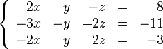
Esto es llamado un sistema lineal de ecuaciones. El objetivo es reducir el sistema a otro equivalente, que tenga las mismas soluciones. Las operaciones (llamadas elementales) son estas:
Multiplicar una ecuación por un escalar no nulo.
Intercambiar de posición dos ecuaciones.
Sumar a una ecuación un múltiplo de otra.
Estas operaciones pueden representarse con matrices elementales que se usan también en otros procedimientos como la factorización LU o la diagonalización por congruencia de una matriz simétrica.
En nuestro ejemplo, eliminamos x de la segunda ecuación sumando 3/2 veces la primera ecuación a la segunda y después sumamos la primera ecuación a la tercera. El resultado es:
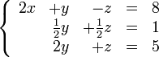
Ahora eliminamos y de la primera ecuación sumando -2 veces la segunda ecuación a la primera, y sumamos -4 veces la segunda ecuación a la tercera para eliminar y.
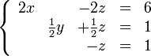
Finalmente eliminamos z de la primera ecuación sumando -2 veces la tercera ecuación a la primera, y sumando 1/2 veces la tercera ecuación a la segunda para eliminar z.
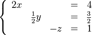
Despejando, podemos ver las soluciones:
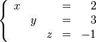
Para clarificar los pasos, se trabaja con la matriz aumentada. Podemos ver los 3 pasos en su notación matricial:
Primero:
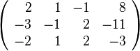
Después:
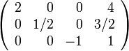
Si el sistema fuera incompatible, entonces nos encontraríamos con una fila como esta:
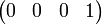
Que representa la ecuación:
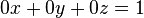
que no tiene solución.
Como usar el programa
Dimencion de la matriz: ingrese la dimencion de la matriz nxn con la opciones del boton desplegables que se enuentran en la parte superior izquierda de la pantalla, acontinuacion el programa automaticamente generar una matriz nula con las dimenciones escogidas.
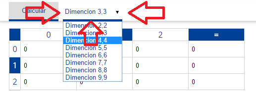
Ingrese las ecuaciones: cada una de las filas representa cada ecuacion y juntas componen el sistemas de ecuaciones propuesto, escriba cada uno de los datos de cada ecuacion, puede ingresar numeros decimales y enteros.
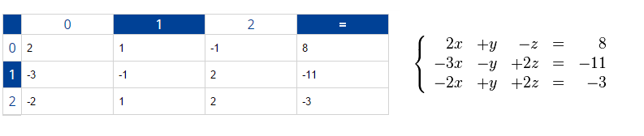
en caso de que se deje alguna casilla vacia o tenga errores en la sintaxis el sistema automaticamente lanza una alerta que le indica que debe rellenar dicha casilla con valores validos:
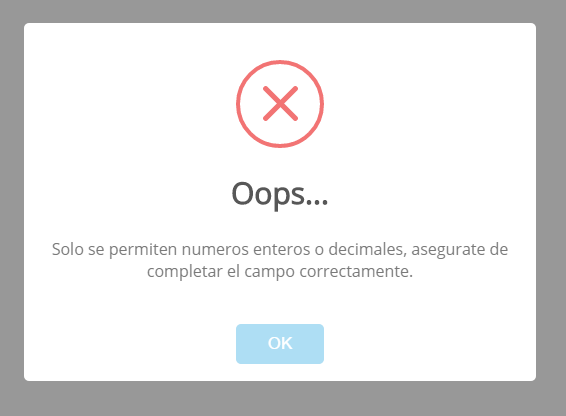
en caso de que se hago caso omiso a esta alerta en sistema deshabilitara la opcion de cualcular en sistema de ecuaciones.
Resolver sistema de ecuaciones: despues de haber ingresado el sistema de ecuaciones, puede calcular la solucion haciendo click en el boton que dice calcular:
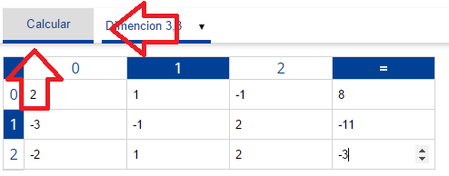
cuando se hace esto automaticamente el sistema calcula la solucion del sistema de ecuaciones por el metodo de gauss jordan y lo muestra sobre la misma interface en donde se ingresaron los datos, los valores de las incognitas son la ultima columna de la matriz:
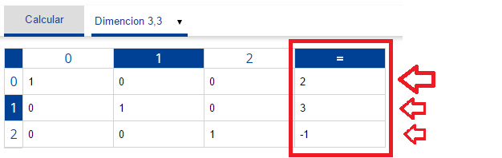
Herramientas
Este software cuenta con varias caracteristicas pensadas para facilitar el uso del mismo las cuales son:
Indicador de filas y columnas: para facilitar la ubicacion de los indices de cada elemento en la matriz, a la vez que se navega por la misma hay un indicador que muestra la fila y la columna exacta en donde se encuentra el cursor o el foco:
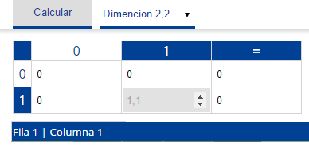
Graficar los resultados: por lo general las ecuaciones lineales se puede graficar en un plano cartesiano pensando en esto este programa es capaz de hacer esto, cuando se haya culculado el valor de cada incognita entonces puede hacer click sobre el boton de la parte inferios izquierda de la pantalla que tiene como titulo graficar:
acontinuacion se despliega una ventana con que tiene un plano cartesiano con uno o varios puntos que representan los valores de las incognitas:
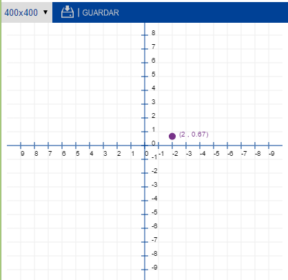
tambien existe la posibilidad de ampliar el plano cartesiano hasta un tamaño de 600x600 pixeles con el boton de opciones desplegables y tambien se puede guardar como una imagen en formato png en el ordenador con el boton que dice guardar.
Acerca de
Este software fue realizado para la universidad uniclaretiana en quibdo/choco con el objetivo de presentar lo como una
practica para una asignatura del programa de ingenieria de sistemas, los desarrolladores son estudiantes de tercer semestre de dicho programa:
Esneyder Amin Palacios Mena
Carlos Andres Figueroa Henao
Fredy Joan Asprilla Mena
este programa es totalmente open source y esta amparado sobre la licensia GNU
Codigo fuente:
https://github.com/Maxtermax/algorithm_gauss_jordan